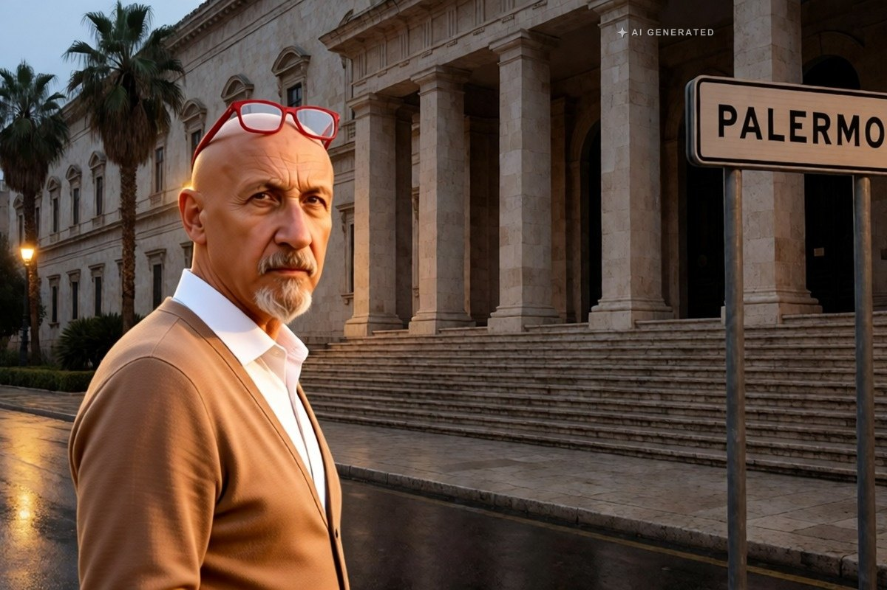

Cronaca · 7 novembre 2026
Revocata la riabilitazione a Totò Cuffaro: torna l'interdizione

Il tribunale di Palermo ha cancellato il provvedimento del 2022 che aveva riaperto all'ex presidente della Regione la strada della politica. A pesare è il patteggiamento nella nuova inchiesta sulla sanità siciliana.
di Franco Zanghì
Il 5 novembre il tribunale di Palermo ha revocato la riabilitazione concessa nel 2022 a Salvatore Cuffaro, detto Totò, ex presidente della Regione Siciliana. Con la revoca tornano l'interdizione perpetua dai pubblici uffici e gli altri effetti penali e civili della vecchia condanna.
Che cos'era la riabilitazione del 2022
Cuffaro ha scontato sette anni di carcere per favoreggiamento a Cosa nostra. Nel 2022 il tribunale di sorveglianza gli aveva concesso la riabilitazione: è l'istituto che, trascorso un certo tempo e accertata la buona condotta, cancella le pene accessorie di una condanna. Per lui significava poter tornare a fare politica, e la politica l'aveva ripresa, alla guida della nuova Democrazia cristiana.
Perché è stata revocata
A pesare è la nuova inchiesta sulla sanità siciliana, quella in cui Cuffaro ha patteggiato tre anni per corruzione e traffico di influenze. La riabilitazione si regge sulla condotta tenuta dopo la pena: quando arriva una nuova vicenda chiusa con un patteggiamento per corruzione, quel presupposto viene meno. Secondo TempoStretto la revoca è stata disposta su istanza della procura generale, guidata da Lia Sava.
C'è un secondo fronte aperto. Cuffaro sta scontando la pena patteggiata in regime di affidamento ai servizi sociali, con il divieto di frequentare politici e amministratori: una violazione di quella prescrizione esporrebbe anche quella misura alla revoca.
Che cosa cambia in concreto
L'interdizione perpetua dai pubblici uffici non è una formula astratta: impedisce di candidarsi e di essere eletto, di ricoprire cariche pubbliche e di esercitare i diritti che la legge collega a quelle cariche. Un partito può continuare a esistere e a portare il suo nome nel dibattito, ma chi è interdetto non può occupare un posto nelle istituzioni.
Il provvedimento non è definitivo in senso assoluto: come ogni decisione di questo tipo può essere impugnata, e sarà il grado successivo a confermarlo o a ribaltarlo.
Il punto
La riabilitazione è uno strumento serio, e dice una cosa precisa: hai pagato, ti sei comportato bene, puoi ricominciare. Ma si regge proprio su quel comportamento. Quando lo Stato ritira quella fiducia non si tratta di accanimento: è la regola che funziona come dovrebbe.
Restano due domande. Una riabilitazione concessa per buona condotta e, pochi anni dopo, un patteggiamento per corruzione: che cosa non ha funzionato nella valutazione iniziale? E quanto pesa ancora, nella politica siciliana, un nome che porta voti?
Fonti
- Ansa, «Revocata la riabilitazione a Totò Cuffaro», 5 novembre 2026
- Giornale di Sicilia, «Cuffaro, il Tribunale di Palermo revoca la riabilitazione», 5 novembre 2026
- PalermoToday, «Revocata la riabilitazione per Totò Cuffaro, torna l'interdizione dai pubblici uffici», 5 novembre 2026
- TempoStretto, «Cuffaro di nuovo interdetto dalla politica, ecco perché», 5 novembre 2026
Le testate indicano l'organo che ha deciso con formule diverse: alcune parlano del tribunale di sorveglianza di Palermo, altre, come il Giornale di Sicilia, del tribunale di Palermo. Qui si riporta quello che le fonti dicono, senza scegliere. L'attribuzione dell'istanza alla procura generale di Lia Sava è di TempoStretto. Il provvedimento è impugnabile.